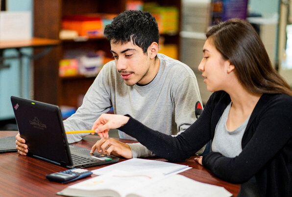

Journey
I am a currently a educational coach for students with disabilities but I also am an aspiring web developer after work. I enjoy to new things and keep up to date with the current times. Completing projects that I am able to call my own is one of the best feelings out there. I am excited to continue my journey into web development and honing my new skills.
I have a drive for creating and thus have dabbled in many hobbies like music making, clay figurine making, and even Carpentry so that I could create my own personalized room from head to toe.
Aspirations
I will hone the skills I have gained in building web sites and continue to add onto them as time permits new changes. I will master the languages of:
- HTML
- CSS
- JavaScript
- Ruby
- Rails
I aim to create asthetic and functional content. My goal is to gain as much knowledge as I can throughout my lifetime within tech as well as in different art forms. In the future I would like to work for a company that I support the moral values of and where I can make new, innovating and asthetic web design for.
One of the largest goals I have is to be able to make an impact in my community in whichever way I possibly can. I would like to make life more accessible for others whether it be through tech or through my other skills that I am building upon. Creating content that gives significance and is meaningful is one of my goals for my personal projects